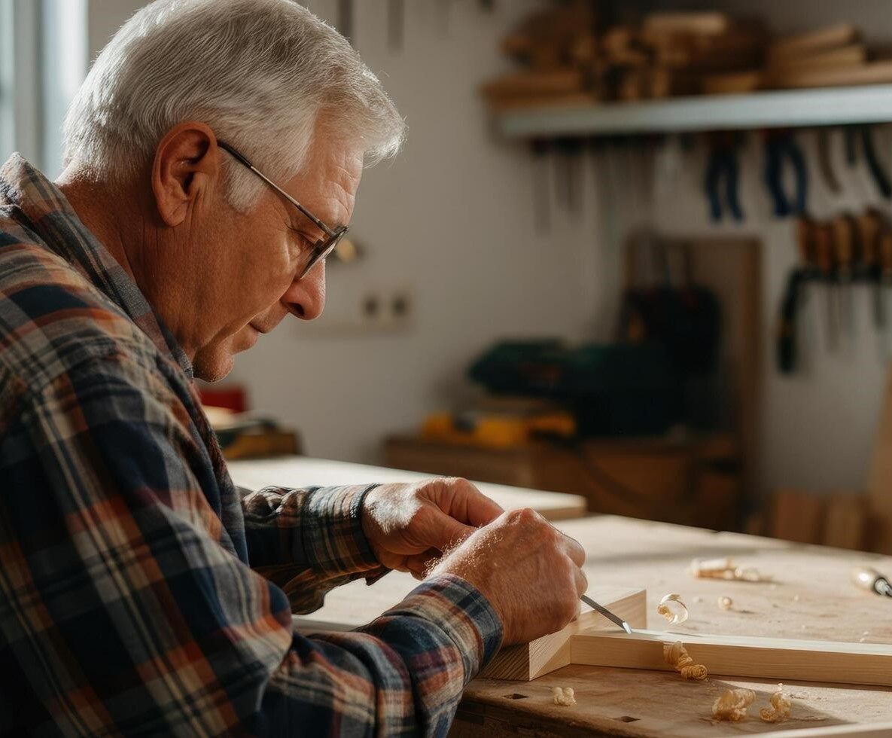
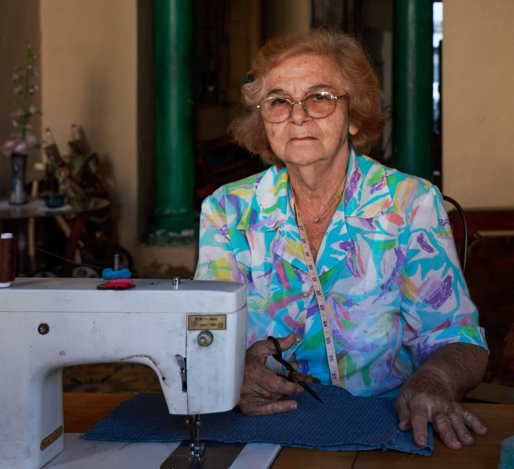

Sua experiência vale muito. Compartilhe-a.
O Talentos 50+ conecta prestadores 50+ e quem procura seus serviços em Aracaju. Publique o que você sabe fazer com ajuda de uma inteligência artificial e seja encontrado por quem precisa.
Projeto em desenvolvimento · sem custo, sem anúncios
A experiência de quem tem 50 anos ou mais está sendo desperdiçada.
São pessoas com décadas de ofício, mas poucos canais simples para transformar isso em oportunidade. Plataformas genéricas não foram feitas para esse público nem para o comércio local.
Devolvemos visibilidade a quem tem experiência
Publique com facilidade
Descreva o que você faz com suas palavras. A IA sugere título, descrição e categoria em segundos.
Seja encontrado
Quem procura filtra por categoria e município e chega direto até você, sem intermediários.
Continue no controle
Você decide o que mostrar. Contato só aparece se autorizado; endereço nunca é exibido.

Perfil quase completo
Falta só confirmar o contato para publicar o anúncio.
Do relato ao anúncio publicado
1. Crie seu perfil
Nome público, município e uma breve apresentação. Você decide o que mostrar.
2. Descreva com a IA
Conte o que você faz com suas palavras; a IA sugere título, texto e categoria.
3. Revise e publique
Edite o que quiser e confirme. Nada é publicado sem a sua aprovação.
4. Seja encontrado
Quem busca filtra por categoria e município e fala direto com você.
Por que Aracaju é a área piloto
Fonte: IBGE, Censo Demográfico 2022 (via Observatório de Sergipe). O recorte divulgado é 60+; o público 50+ é ainda maior.
Feito para dois tipos de pessoa
Prestadores com 50 anos ou mais
Moradores de Aracaju que querem divulgar um serviço ou saber, complementar a renda, manter-se ativos e ser reconhecidos pela experiência que têm.
Clientes de qualquer idade
Pessoas que buscam um profissional experiente, próximo de casa, e preferem falar direto com quem presta o serviço.
Como o projeto é organizado
Rastreabilidade
GitHub com branch protegida, pull requests e Kanban com tarefas por responsável.
Escopo controlado
O roadmap é um compromisso. Item novo só entra se outro de esforço equivalente sair.
Privacidade
Contato só com consentimento; endereço residencial nunca é exibido.
IA responsável
Ela apenas sugere; a pessoa sempre revisa e confirma antes de publicar.
Conduta e autoria
Conteúdo original, licenças respeitadas, conforme o edital do MVP.
Quem está por trás do Talentos 50+
 BL
BLBernardo Lima
Back-end, Web, Mobile e integração da inteligência artificial.
 NR
NRNilton Rodrigues
Pesquisa de campo, estudo de mercado e revisão do roadmap.
 LE
LELucas Eduardo
Landing page, protótipos de tela e testes com o público 50+.
 JG
JGJoão Gabriel
Documentação do projeto, experiência do usuário e revisão geral.
Orientação acadêmica: Prof. Marcos Cesar · UNINASSAU Aracaju, Análise e Desenvolvimento de Sistemas.
Sua experiência não deveria ficar invisível.
Acompanhe o Talentos 50+ enquanto construímos, passo a passo, uma vitrine para quem tem 50 anos ou mais em Aracaju.
Release 1 em desenvolvimento · previsão de conclusão em 25/10/2026